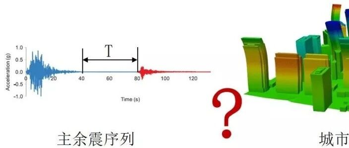

新论文：主余震作用下区域建筑震害预测方法

论文链接：
http://journal.hep.com.cn/fem/EN/10.1007/s42524-019-0072-x#1
https://link.springer.com/article/10.1007/s42524-019-0072-x
写在前面话：一个困扰了我十多年的问题
2008年“512”汶川地震的时候，我们在前线救灾期间，5月19日因为收到强余震预报，我们专家组都转移到一辆公共汽车上去过夜。在车上专家组进行了一番热烈的讨论，讨论的话题是：“我们此前多日辛苦得到的震损评价结果，会不会因为这次余震而前功尽弃？”
余震可能很大可能很小，大的余震肯定会造成严重后果，而小的余震则不会造成恶果。但是灾区广大建筑因为已经遭遇了一次地震损伤，其抗震能力已经下降，再来多大的余震可能会对整个区域的震损评价结果产生显著影响，这个问题一直都缺乏合适的依据。这个问题困扰了我十多年，也是我们着手研究本文的一个重要背景。
000
太长不看版
地震后往往伴随着大量的余震，而余震的发生往往会加剧在主震下已经损伤建筑的进一步破坏，因此，区域建筑的余震震害风险预测对震后应急有着重要意义。而城市抗震弹塑性分析法理论上能应用于区域建筑的主余震分析，但目前尚未应用于区域主余震分析，其面临的主要挑战有：城市抗震弹塑性分析方法应用于主余震分析的可靠性需要验证、缺少区域的主余震情境构造方法。

城市抗震弹塑性分析法应用于主余震分析
针对所面临的挑战，本文基于城市抗震弹塑性分析方法提出了一套主余震作用下区域建筑震害预测方法，主要结论有：
(1) 基于非线性时程分析和多自由度层模型的城市抗震弹塑性分析方法能够很好地预测主余震作用下区域建筑的响应；
(2) 考虑余震幅值、频谱、持时、震级和场地信息多个目标参数相近的主余震序列构造方法能快速合理地构造目标主余震序列；
(3) 所提出的主余震作用下区域建筑震害预测方法能够快速构建多种主余震情境并给出相应的震害预测结果，为震后的应急救援决策提供了参考。
01
研究背景
地震后往往伴随着大量的余震，如唐山地震、汶川地震和2015年尼泊尔地震等。结构在主震下遭受破坏来不及修复，而余震的发生往往会加剧在主震下已经损伤建筑的进一步破坏，如2011年基督城地震，2015年尼泊尔地震，2016年意大利中部地震，因此需要考虑余震对建筑的影响。
目前考虑余震影响的单体建筑的分析已经有很多研究成果，如主余震对钢筋混凝土框架、木结构、钢框架、钢筋混凝土剪力墙结构等的影响。预测余震对区域建筑的影响对震后应急救援决策有着重要意义，但是目前没有预测主余震作用下区域建筑震害很好的方法。因此，需要提出一套预测区域建筑主余震震害的方法。
02
主余震作用下区域建筑震害预测方法
2.1 分析框架
本文提出了一套主余震作用下区域建筑震害预测方法，该方法的框架如图1所示。该方法主要包括以下步骤：
(1) 通过地震台网快速获取主震实测地面运动记录及震级、位置、断层等宏观信息；
(2) 由于余震发生的时间、位置和震级等的不确定性，本文假定多种余震震级、位置、断层信息，构造多种余震情境；
(3) 根据构建的余震情境，依据主余震关系，确定余震幅值和频谱特征，再根据震级持时关系确定余震持时特征；
(4) 选取与余震幅值、频谱、持时、震级和场地信息相近的地震动作为余震记录，构造主余震序列；
(5) 输入主余震序列到建筑的MDOF模型中，进行非线性时程分析即可预测主余震作用下区域建筑的震害。

图1 主余震作用下区域建筑震害预测框架
2.2 区域建筑震害分析模型
本文采用课题组的基于非线性多自由度模型和时程分析方法的城市抗震弹塑性分析方法来模拟区域建筑地震下的响应。其中，常规多层建筑在地震下通常表现出剪切变形模式，因此用多自由度剪切层模型来模拟，如图2(a)所示；而高层建筑通常表现出弯剪耦合变形形态，因此采用多自由度弯剪耦合模型模拟高层建筑，如图2(b)所示。上述两种多自由度模型楼层之间弹簧的骨架线均采用HAZUS报告中推荐的三线性骨架线，如图2(c)所示。城市抗震弹塑性分析方法建议了中国和美国不同国家基于宏观数据的多自由度模型层间参数的确定方法。其具体介绍可以参考以往工作：（综述：城市抗震弹塑性分析及其工程应用）。

图2(a) MDOF剪切层模型; (b) MDOF弯剪耦合模型; (c) MDOF模型中的三线性骨架线
2.3 区域建筑分析模型主余震验证
合理准确地计算建筑在主余震下的响应是预测建筑在主余震下震害的关键，本文通过与建筑在主余震作用下的实测响应和已经公开发表文献中的模型计算结果对比，验证本文所采用的区域建筑分析模型的准确性。
2.3.1 与建筑实测响应对比
从CESMD数据库中选取建筑在实际主余震作用下的实测响应记录，与所采用的区域建筑分析模型的计算结果进行对比。图3给出了10组的对比结果，其中建筑及主余震详细信息参见论文中表1，分析输入的地震动均为建筑底部实测的地震动记录。从对比结果可以看出，本文所采用的区域建筑分析模型计算的主余震响应与建筑实测主余震响应较为一致。

图3 建筑主余震实测记录与MDOF计算结果对比
2.3.2 与已发表文献中的结果对比
为了进一步验证本文所采用的MDOF模型可以对主余震作用下结构的行为进行较好的模拟，本文将MDOF模型在主余震下的响应与已经公开发表的文献中结构的主余震响应进行了对比，建筑基本信息及输入的主余震和所出自文献信息参见论文原文表2所示。相应的对比结果如图4所示，其中，横坐标为MDOF模型计算出的建筑各层的层间位移角，纵坐标为对比文献所给的层间位移角，典型的层间位移角的对比结果如图5所示，分别对应论文原文表2中编号为1、2和7号的案例。从对比结果可以看出，本文所采用的MDOF模型的计算结果与公开发表文献中的结构在主余震下响应的分析结果较为一致。

图4 MDOF模型主余震作用计算结果与已发表论文中结果对比

图5 典型案例层间位移角的对比结果
2.4 主余震序列构造方法
合理地构造主余震序列能为预测区域建筑在主余震作用下的震害结果提供地震动输入，本小节简单介绍本文所提出的构造符合余震幅值、频谱、持时、震级和场地信息多目标参数相近的主余震序列构造方法。
其中，余震地震动幅值和频谱根据Kim和Shin提出的确定余震水平向地震动参数的方法进行确定，如式(1)- (4)所示：

余震的持时选用Bommer等提出的根据震级、断层、场地信息确定持时的方法来确定余震的重要持时，如式(5)所示，式中参数含义参见论文：

在余震的幅值、频谱特性和持时确定后，便可以在NGA-West2在线数据库中运用其选波工具选取与余震的幅值、频谱、持时以及震级和场地信息多目标相近的地震动作为余震地震动记录。本文提出的构造主余震序列的方法能够构造区域范围的主余震序列场，为预测主余震下区域建筑的响应提供了主余震输入。
03
案例分析——以龙头山镇鲁甸地震为例
最后我们以龙头山镇鲁甸地震为例，说明本文所建议的主余震作用下区域建筑震害预测方法的具体实现流程。龙头山镇的震害调查收集了钢筋混凝土框架结构、设防砌体结构和未设防砌体结构共计56栋建筑的结构及震害资料。Xiong等将MDOF模型的分析结果与实际震害进行了对比，说明了该分析模型能够较为准确可靠的预测区域建筑的地震损伤情况。在此基础上，我们给出了不同主余震情境下龙头山镇的震害预测结果，具体的实现流程如下：
(1)本次鲁甸地震的基本信息如表1中主震信息所示，并在龙头山镇台站记录到本次地震的地面运动记录。
(2)由于余震发生的时间、位置和震级等的不确定性，这里示例性地假定了四种余震情境，余震基本信息如表1所示；
(3)根据所提出的主余震序列构造方法即可确定不同余震的持时（如表1所示）和反应谱（如图6所示），进而构造出不同主余震情境下的主余震序列；
表1 案例中主震信息及构造的余震基本信息


图6不同主余震情境下的余震PSA
(4)输入主余震序列即可得到主震单独作用和各个主余震情境下的建筑震害分析结果，如图7所示。图7(b)为达到“毁坏”破坏状态建筑所占比例的标准差，可以看出，随着震级的减小，余震造成的影响在减小，结构的破坏主要由主震控制，计算结果的离散程度相应在减小。本文提出的方法能够给出建筑在不同主余震情境下的震害结果，分析结果可以为震后应急救援提供参考。例如，表1初步可以说明，发生5.0级以下余震时，该地区建筑震害不会有大的变化，可以按照既定救灾方案进行救灾，而发生5.5级以上余震时，该地区建筑震害会有所加剧，应当根据灾情加剧程度增加救援力量和物资。

图7主震及不同主余震情境下龙头山镇震害结果
(5)本文所提出的方法能给出不同建筑在不同主余震情境下的结构响应，如表2所示，给出了龙头山镇建筑编号为Building_1和Building_2两栋建筑在不同主余震情境下的最大层间位移角及破坏状态，精细化的震害分析结果为区域建筑主余震震害预测提供了丰富的参考信息。
表2 典型建筑最大层间位移角及破坏情况

完成上述一个主余震案例的分析仅需要70 s (Intel Xeon E5 2630 @2.40 GHz and 64 GB RAM)，说明本文所提出的主余震作用下区域建筑震害预测方法有着很高的分析效率，这使得该方法在地震应急中能得以较好地应用。主震发生后，可以快速构建多种主余震情境并给出相应的震害预测结果，为震后的应急救援决策提供了重要参考信息。
04
结论
本文提出了一套主余震作用下区域建筑震害预测方法，该方法采用城市抗震弹塑性分析方法作为建筑分析方法；通过与建筑在实测主余震下的响应及已经发表的文献中模型的计算结果进行对比，验证了所采用的建筑分析模型的合理性；提出了考虑余震幅值、频谱、持时、震级和场地信息多个目标参数相近的主余震序列构造主方法。主要结论有：
(1) 所采用的城市抗震弹塑性分析方法能够很好地预测主余震作用下区域建筑的响应；
(2) 考虑余震幅值、频谱、持时、震级和场地信息多个目标参数相近的主余震序列构造方法能快速合理地构造目标主余震序列；
(3) 所提出的主余震作用下区域建筑震害预测方法能够快速构建多种主余震情境并给出相应的震害预测结果，为震后的应急救援决策提供了参考。

程庆乐
---End---
相关研究
新论文：抗震&防连续倒塌：一种新型构造措施
长按识别二维码，关注我们的科研动态